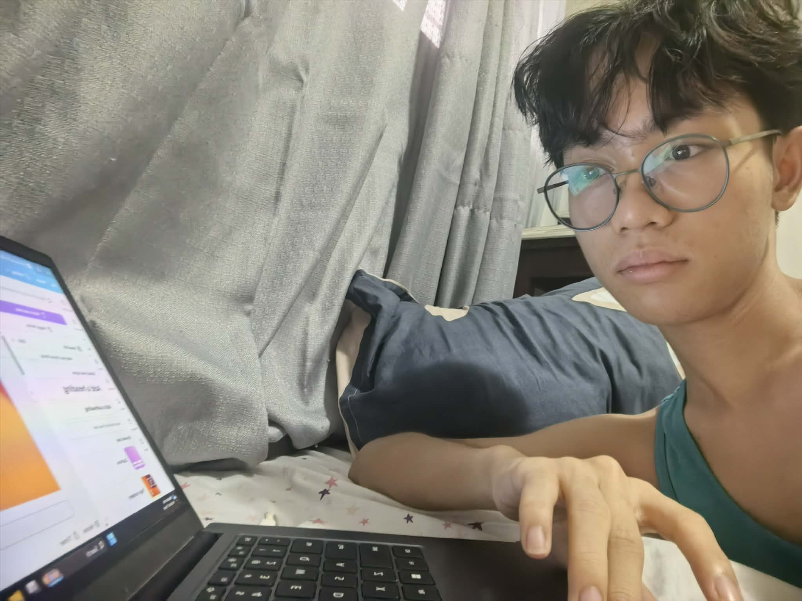

The person in this picture is a bonafide student of Stand Alone Senior High School Within Taguig Integrated School.
His name is Theodore Clement Aplasca, Student of The Section "LEE" of the Academic Year 2026-2027. He is a student of The Information, Communication and Technology - Computer Systems Servicing Strand. He is currently enrolled in the Alternative Delivery Mode (ADM) program. This program allows students to learn and complete their coursework through online platforms, providing flexibility in their education.
He is also a consistent honor student ranging from the average of 90-95 from Grade 8 to Grade 11. Until today he is tired and he is still studying to be a successful student in the future. He is also a student who is very responsible and dedicated to his studies, always striving to achieve his goals and excel in his academic pursuits. He is a role model for his peers and a source of pride for his family and community.
